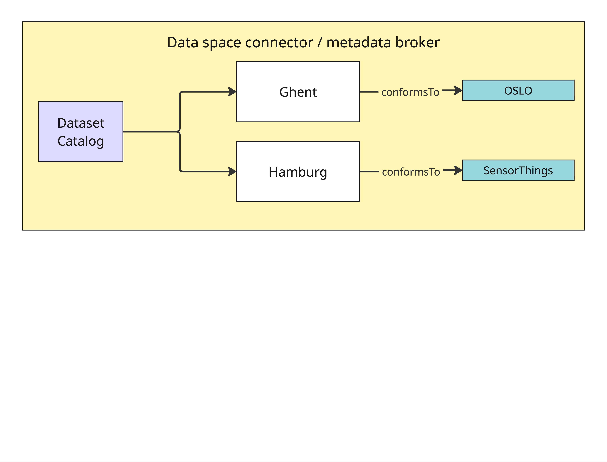
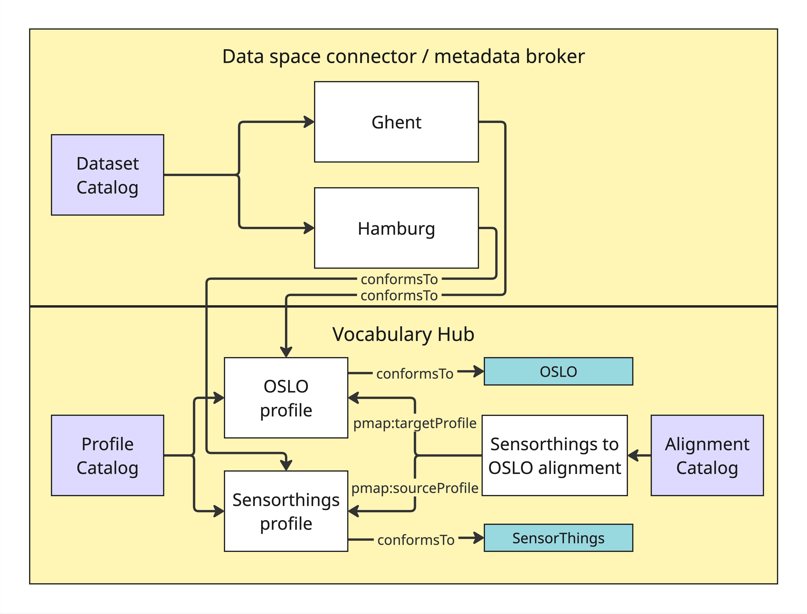
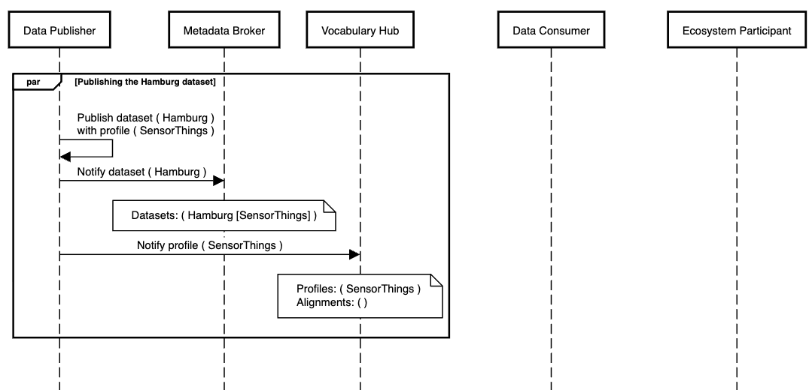
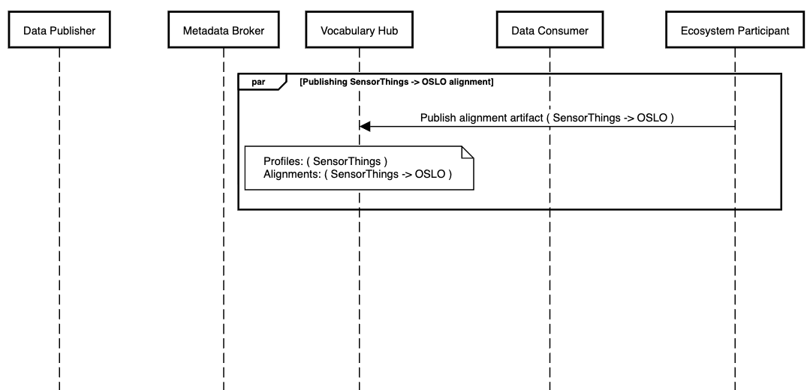
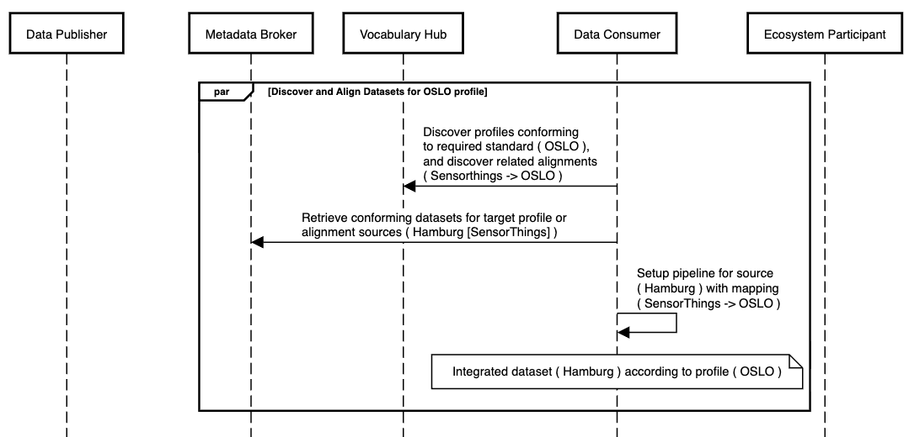

Data spaces are heterogeneous
-
Regional initiatives (OSLO)
provide local publishing baselines
-
Established standards (DATEX)
provide international interoperability
-
Semantic alignment bridges the gap
between heterogeneous data models
The Vocabulary Hub
-
The Vocabulary Hub manages semantic
artifacts as ontologies and specifications
-
Available tooling performs alignments
over internal data model definitions
-
Can we generalize alignments
to scale with the data space?
Dataset description
-
DCAT catalogs provide a basis
for discovery and interoperability
-
Application profiles define
domain-specific metadata
-
Standards internalize formats, schemas,
vocabularies, specifications, ...
Dataset profile
-
Unified profile declaration of specification
defining internal and extended constraints
-
Semantic artifact published by the
Vocabulary Hub as a profile catalog
-
Dataset profiles explicitly link relevant
resources for discovery and alignment
Alignment artifact
-
Defines alignment profile from
source to target dataset profile
-
Publishes executable mappings as
semantic artifact in the vocabulary hub
- SPARQL Construct, RML, Notation3
-
Alignment artifacts enable automating
integration pipelines by consumers
From datasets

to alignments

Dataset publishing

Alignment publishing

Discovery and integration

DeployEMDS - Alignment of traffic counts
-
Regional and industry partners
over Flanders and Germany
-
Alignment of internal data model with,
OSLO Verkeersmetingen and SensorThings
-
Client integration based on automated
pipelines for continous mapping and integration
Continuous integrations through pipelines
-
RDF-Connect pipelines used for publishing
mapping and integrating RDF data using LDES
-
Pipeline setup based on client discovery
of profiles and alignments in data space
-
Artifact catalogs provide interoperable
baseline for artifact discovery
Where do we go from here?
-
Integration of approach in wider
data space deployments
-
Evaluating dataset profiles as basis
for AI discovery and alignment systems